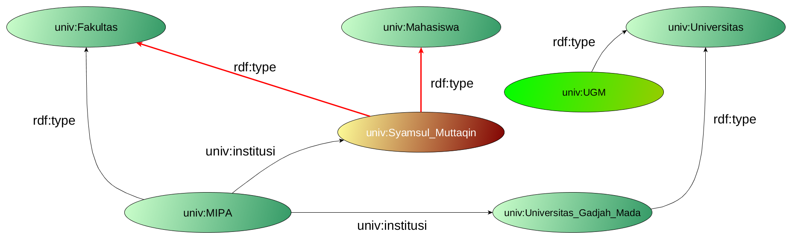

WORKSHOP SEMANTIC WEB
OWL Ontology
oleh
Syamsul Muttaqin
OWL in STACK ?

Apakah RDFS sudah cukup ?
OWL Ontology
-
OWL 1
- Ditetapkan sebagai standar oleh W3C pada tahun 2004
- Berbasis pada ekspresi SHOIN(D)
-
OWL 2
- Ditetapkan sebagai standar oleh W3C pada tahun 2009
- Berbasis pada ekspresi SROIQ(D)
OWL Ontology
-
Bersifat Open World Assumption
”Sesuatu yang tidak di definisikan belum tentu salah”
-
No Unique Name Assumption
”UGM belum tentu sama dengan Universitas Gadjah Mada”
OWL Expression Concept
-
Axioms
-
T-Box
Statement tentang struktur kelas -
A-Box
Statement tentang dataset -
R-Box
Statement tentang property
-
T-Box
- Class Constuction
Ekspresi OWL 1 - DL
OWL 1 DL berbasis pada ekspresi SHOIN(D) yaitu:
- S
- Union
- Intersection
- Negation
- Existential Quantifier
- Universal Quantifier
- Transitive Property
Ekspresi OWL 1 - DL
-
H
- Class Hierarchy
- Property Hierarchy
- O -> Nominals
- I -> inverse property
- N -> Number restriction >= 10
- D -> Datatype restriction
OWL 1 Hierarchy
Ekspresi OWL 2 - DL
OWL 2 DL berbasis pada ekspresi SROIQ(D) yaitu:
- S -> ALC+
- R -> Role Restriction
- O -> Nominals
- I -> Inverse
- Q -> Qualified Nominals
OWL 2 Hierarchy

Terima Kasih
Slide dan materi lainnya bisa di unduh di Github